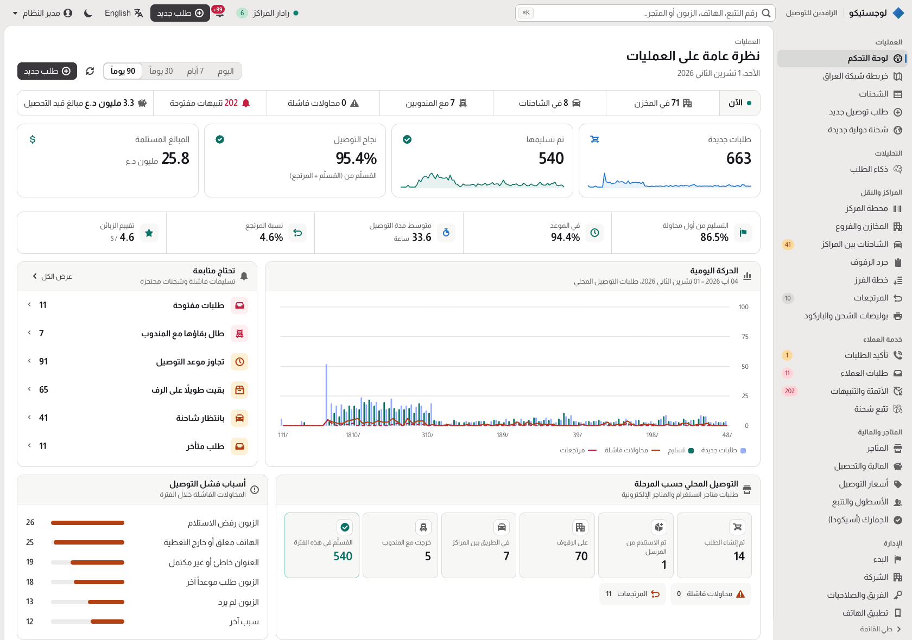
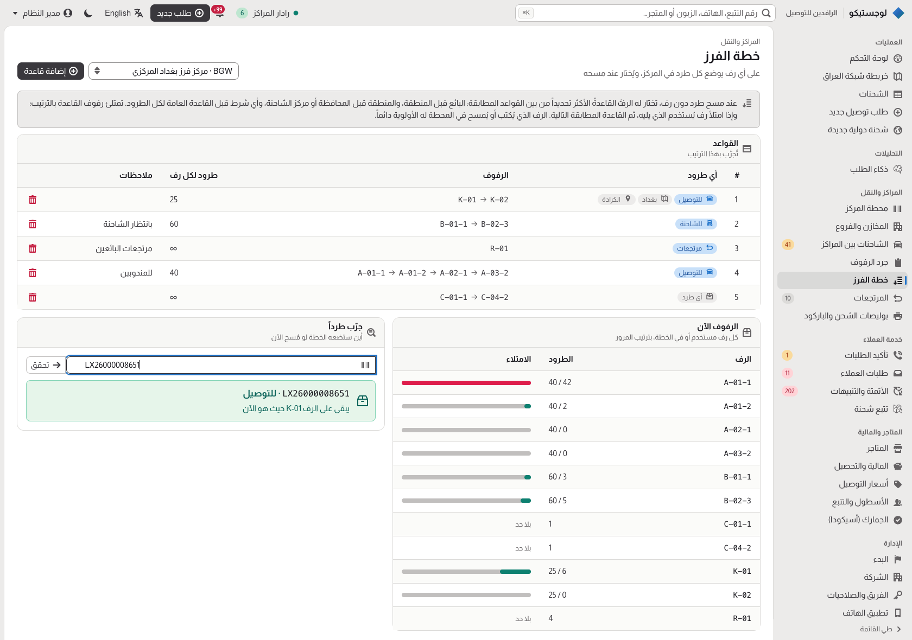
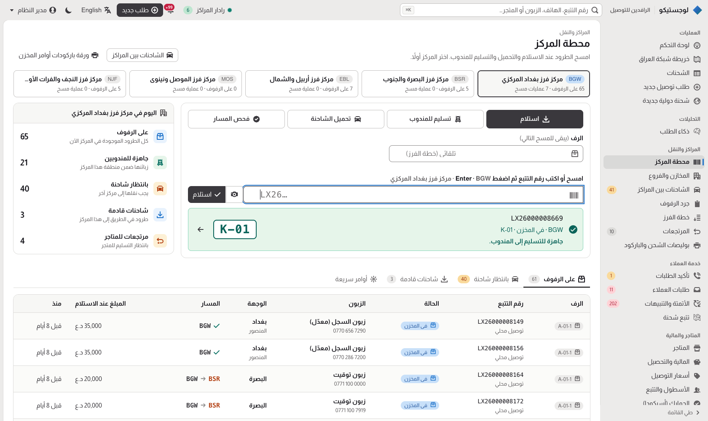
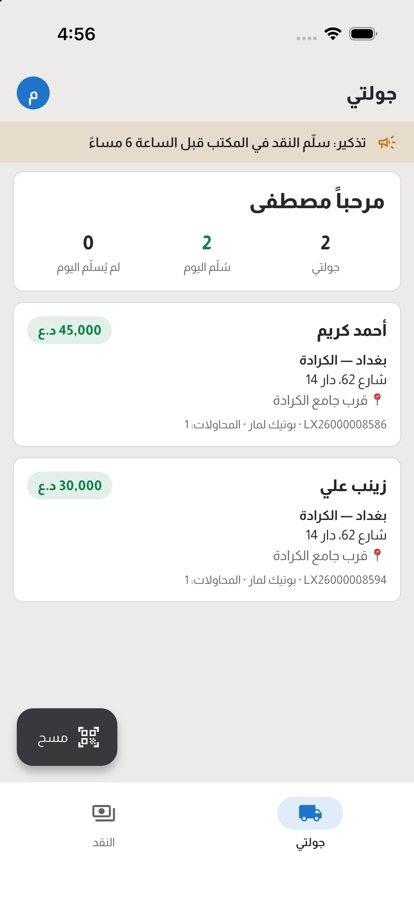
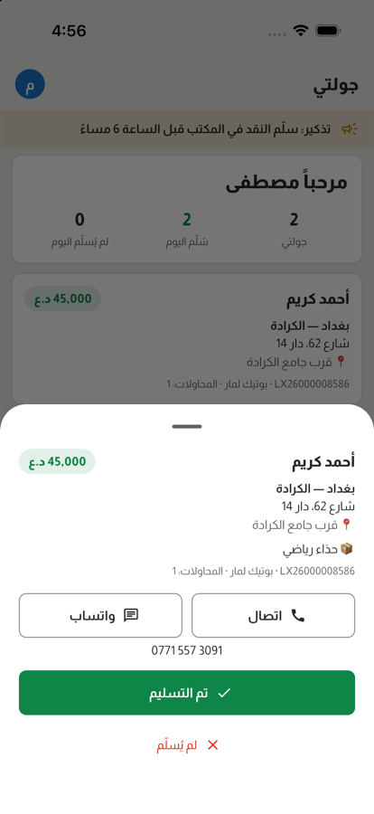
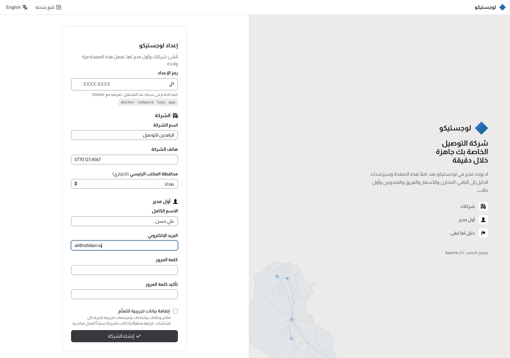
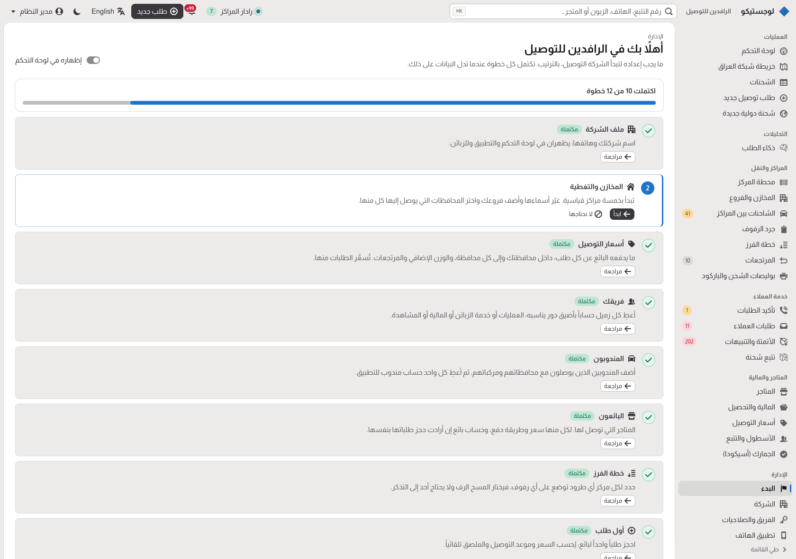

Open-source delivery management system and courier app
Run a delivery company in one free system: orders from online shops, hubs and sort plans, trucks between cities, couriers with proof of delivery, cash on delivery, returns and customer tracking. Built for Iraq, useful anywhere an address is a neighbourhood and a landmark.
نظام مجاني ومفتوح المصدر لإدارة شركات الشحن والتوصيل، بالعربية أولاً

Everything a delivery company runs on
One console for the office, one app for couriers, sellers and managers, and a public tracking page for customers.
Delivery orders
Seller, customer and Iraqi address (governorate, area, landmark), COD in IQD, a delivery promise that skips Fridays, customer risk while typing the phone.
Hubs, trucks and sort plans
Scan parcels through hubs; the sort plan picks the shelf, trucks between cities are planned, loaded and unloaded by scan.
Courier app
The day's run, call or WhatsApp the customer, proof of delivery with signature and location, cash to hand in.
Barcode scanners
Built-in scanners of Android handhelds (Zebra, Urovo, Sunmi…), Bluetooth/USB scanner guns, or the camera.
Cash on delivery
Cash held by each courier, hand-ins against parcels, seller balances and settlement batches with statements.
Returns and requests
Returns after the last failed attempt, back by truck; customers reschedule or change the address from the tracking page.
Seller portal
Shops book their own orders at your prices, follow them, and see what they are owed and every payout.
Demand intelligence
What customers order, where and when, basket size against refusals, and an anonymised open-data export.
Automation
Alerts, rescheduling, truck planning and auto-cancel every minute, by your company's rules.
Audit log and roles
Who changed what and when, field by field; five office roles enforced by the API.
Customs (ASYCUDA)
International bookings, declaration workbench, e-verification and SAD XML export.
Guided first run
A setup page, a getting-started guide for each role, and installation health before going live.
Sort plans: the scan picks the shelf
Each hub says which parcels go on which shelves and how many fit. A full shelf overflows to the next; the station shows the chosen shelf large.


One mobile app for couriers, sellers and managers
Flutter for Android and iOS. What each kind of account sees is controlled from the console.


Quick start
Try it with demo data (any computer with Docker), then open http://localhost:5210 and sign in as admin@logistico.local / Logistico#2026.
git clone https://github.com/Haix02/logistico-software.git
cd logistico-software
docker compose up --buildFor a real company, start it without demo settings: it writes a one-time setup code to its log, and /setup creates your company and its first administrator. A getting-started guide takes you through the rest.


لوجستيكو بالعربية
نظام مفتوح المصدر ومجاني لإدارة شركات الشحن والتوصيل في العراق: الطلبات ومتاجر الإنستغرام، الدفع عند الاستلام، المخازن والرفوف وخطة الفرز، الشاحنات بين المحافظات، تطبيق المندوب مع إثبات التسليم، المرتجعات، تسوية مستحقات المتاجر، الجمارك (أسيكودا)، وصفحة تتبع للزبون. الواجهة عربية أولاً من اليمين إلى اليسار، مع الإنجليزية، وتعمل على خادمك الخاص.
Questions
Is Logistico free?
Yes. It is open source under the Apache-2.0 licence: run it on your own server, change it, and use it commercially.
Does it work in Arabic?
Arabic is the default language, right to left, with English one click away. Addresses follow how Iraqis give them: governorate, area and the nearest landmark.
Is there a courier app?
Yes. One Flutter app for Android and iOS serves couriers, sellers and managers, with proof of delivery and hardware barcode scanners.
How do I install it?
docker compose up to try it with demo data. For a real installation, the setup page creates your company with a one-time code from the server log; see production readiness.
Can it handle cash on delivery?
Yes: couriers collect cash per parcel and hand it in against the parcels it covers; sellers are paid in settlement batches with statements.